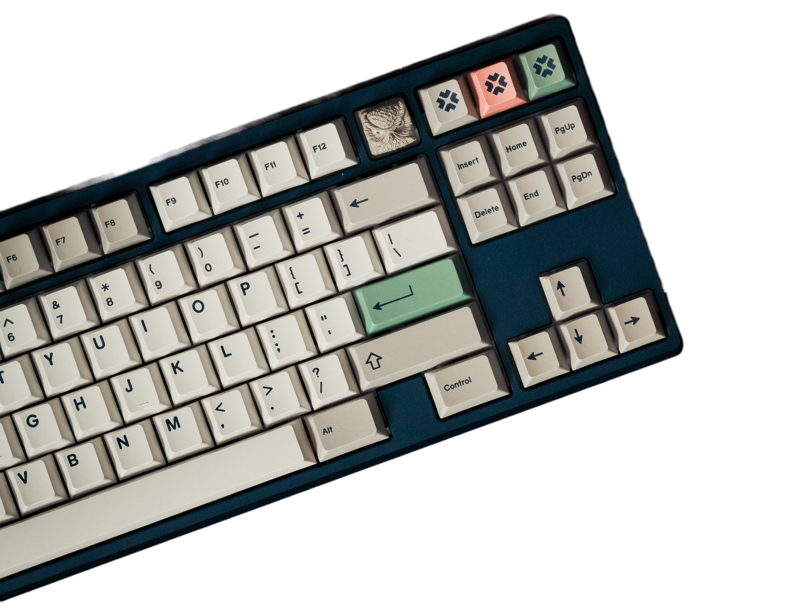
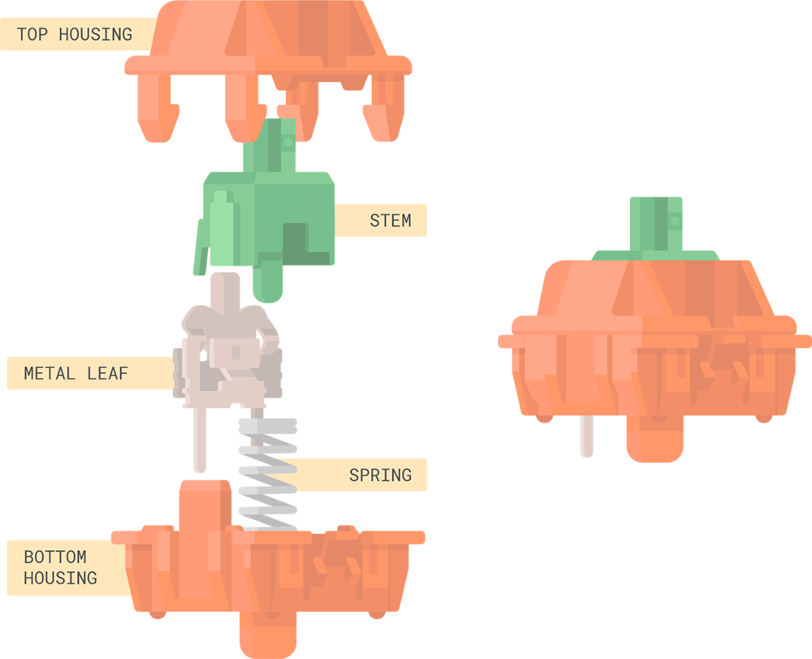

Main Components
Keycaps
Keycaps are the main factor in determinging the visible aesthetic of your keyboard, along side with the keyboard case. They also contribute to the sound signature of the board based on material and keycap size.
Switches
Switches are the main component that determines the feel of the keyboards typing experience. They also provide different sound signatures based on the material of the switches. They are composed of bottom and top housing, the spring, and the stem of the switch.
Plates
The plate is the secondary factor is determining the feel of a keyboard. The common materials are aluminium, FR4, Polycarbonate and POM. It determies the flex of the typing experience and can slightly contribute to the sound signature of the keyboard.
PCB
The PCB is the brain of the keyboard. It is what connects and communicates to the computer what keys are being activated. Some manufactures has implemented flex cuts into the PCB in order to make the typing feel a little more bouncy and softer.
Case
The case is another major part of the aesthetic appeal of the keyboard. This is where designers spend most of their creative efforts to add chamfers or other design adjustments in order to differentiate their boards from other designers'. Most premium boards are made of aluminium and include a brass weight in order to add some weight to the board so that it feels more hefty and premium.